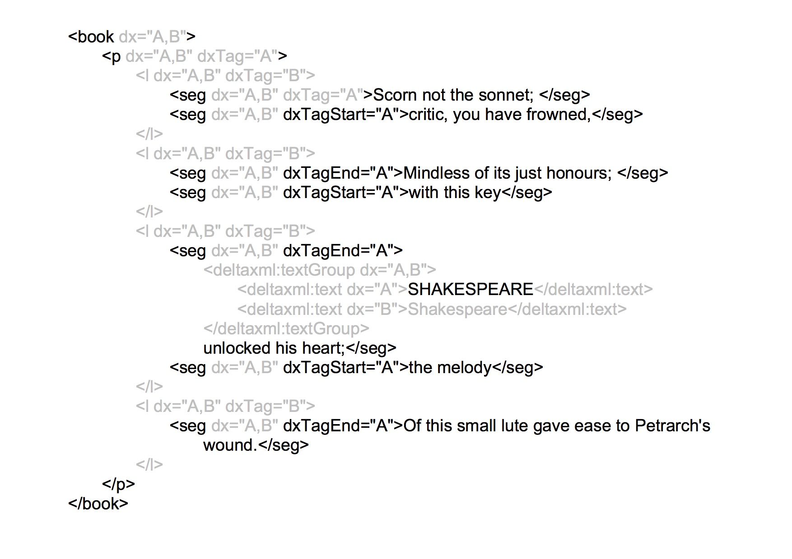

In order to avoid duplication of content, we need to distinguish between the element tag and its content so that we can make assertions about the tag and content separately and independently.
As a starting point, we can add an attribute to an element to indicate whether or not this element was present in a particular variant of the document. If the element was present, then the implication is that both the tag and the contents were present. In the above situation, we want to indicate that the content, i.e. the word 'quick', was present in two versions, but the tag, i.e. the <s>, was only present in one version. We can take a simple approach to this and add an additional attribute with this information.
<p dx=”A,B” dxTag=”A,B”>The <s dx=”A,B” dxTag=”B”>quick</s> brown fox.</p>
Here, the dx attributes tells us the documents in which the element (and its content) were present, as described above. But now the dxTag attribute tells us a bit more: whether or not the tag itself was present. So where the document identifiers are the same in both the dx attribute and the dxTag attribute, the element and its content were present. Where we see dx='A,B' and dxTag='B' we can deduce that the tag was present only in B. This means that A contained ‘quick’ and B contained ‘<s>quick</s>’.
We can optimize this a little by omiting the dxTag attribute if its value is the same as the dx value. Therefore we get:
<p dx=”A,B”>The <s dx=”A,B” dxTag=”B”>quick</s> brown fox.</p>
This is a simple representation of a simple change. We can make an adjustment to this to represent, for example, a change from <i> in document A to <s> in document B as follows:
<p dx=”A,B”>The <i dx=”A,B” dxTag=”A”><s dx=”A,B” dxTag=”B”>quick</s></i> brown fox.</p>
We can now introduce some overlap and see how the principles above are extended. When overlap occurs, in order to avoid duplicating content, we need to split some of the elements into fragments - this is the approach that Jeni Tennison calls 'fragmentation'. When we fragment an element, then clearly one original element becomes two or more fragments. The dxTag attribute refers to the whole tag, so we need to extend this to represent the start and the end. To achieve this we have dxTagStart and dxTagEnd so that we clearly distinguish between the start fragment and the end fragment. In more complex situations where an element is split into more than two fragments, we also introduce dxTagMiddle for any fragement betwen the start and end fragments.
This is an example of simple overlap:
<p>The quick brown fox. It jumped over the lazy dog.</p>
<p>The quick brown fox.</p><p> It jumped over the lazy dog.</p>
This is represented as:
<p dxTagStart="A" dxTag="B" dx="A,B">The quick brown fox.</p> <p dxTagEnd="A" dxTag="B" dx="A,B"> It jumped over the lazy dog.</p>
This shows two <p> elements, and for the B document each of these represents a complete element, denoted by dxTag="B". For the A document, the two <p> elements are fragements and so the first is identified by dxTagStart="A" and the second one by dxTagEnd="A". This is an unambiguous representation that requires no duplication of textual content. The astute observer may comment that the leading space in the second paragraph of the B document would probably have been deleted. Proper handling of whitespace is a consumer of considerable time and effort in XML document processing. This type of change could be represented but it complicates the story so is ignored for this example.
We can now consider an example of double overlap, where text is moved from one paragraph to another:
<p>The quick brown fox. It jumped over the lazy dog.</p><p> Yes!</p>
<p>The quick brown fox.</p><p> It jumped over the lazy dog. Yes!</p>
This is represented as:
<p dxTagStart="A" dxTag="B" dx="A,B">The quick brown fox.</p> <p dxTagEnd="A" dxTagStart="B" dx="A,B"> It jumped over the lazy dog.</p> <p dxTag="A" dxTagEnd="B" dx="A,B"> Yes!</p>
This shows three <p> elements, all of which are fragments in at least one document. In the B document the first of these represents a complete element, denoted by dxTag="B". The last two <p> elements are fragments and so the first is identified by dxTagStart="B" and the second one by dxTagEnd="B". This mechanism will scale to any level of complexity, for example three or more overlapping hierarchies. As overlap increases, so does the fragmentation and therefore the complexity of the result.
Although there is not time to explore this more fully in this paper, it would certainly be interesting to determine how easy it is to perform queries on this structure such as, "find all the paragraphs containing both the word 'fox' and the word 'dog'" and have this return just the A document because in the B document these words are in different paragraphs.
We can now look at a larger example including a change. We will for the example ignore white space changes. The A document is:
<book>
<p>
<seg>Scorn not the sonnet;</seg>
<seg>critic, you have frowned, Mindless of its just honours;</seg>
<seg>with this key SHAKESPEARE unlocked his heart;</seg>
<seg>the melody Of this small lute gave ease to Petrarch's wound.</seg>
</p>
</book>And the second, B, document is as follows:
<book>
<l>Scorn not the sonnet; critic, you have frowned,</l>
<l>Mindless of its just honours; with this key</l>
<l>Shakespeare unlocked his heart; the melody</l>
<l>Of this small lute gave ease to Petrarch's wound.</l>
</book>There are different representations that we can generate for this depending on how we decide to nest the fragments. For example, if we generally nest the <seg> elements inside the <l> elements, we get this result:
<book dx="A,B">
<p dx="A,B" dxTag="A">
<l dx="A,B" dxTag="B">
<seg dx="A,B" dxTag="A">Scorn not the sonnet; </seg>
<seg dx="A,B" dxTagStart="A">critic, you have frowned,</seg>
</l>
<l dx="A,B" dxTag="B">
<seg dx="A,B" dxTagEnd="A">Mindless of its just honours; </seg>
<seg dx="A,B" dxTagStart="A">with this key</seg>
</l>
<l dx="A,B" dxTag="B">
<seg dx="A,B" dxTagEnd="A">
<deltaxml:textGroup dx="A,B">
<deltaxml:text dx="A">SHAKESPEARE</deltaxml:text>
<deltaxml:text dx="B">Shakespeare</deltaxml:text>
</deltaxml:textGroup> unlocked his heart;</seg>
<seg dx="A,B" dxTagStart="A">the melody</seg>
</l>
<l dx="A,B" dxTag="B">
<seg dx="A,B" dxTagEnd="A">Of this small lute gave ease to Petrarch's
wound.</seg>
</l>
</p>
</book> It is instructive to visualize this structure as shown below. Here we are looking at it primarily as document A, so the tags and text that belong only to B have been greyed out. This is to visualize more clearly the A structure. Some of the <seg> elements are still split so these would need to be merged in order to get back to the original A document, although the basic original structure of A is apparent.
This visualization illustrates the very simple nature of this approach. The attributes we are adding provide information about an element, specifically for each variant the attributes tell us which of the following is true:
The tag and its content are present in this variant and the element is not fragmented
The tag and its content are present in this variant and the element is fragmented, so this is the start, the end or a middle fragment
The content is present in this variant but not the tag
The tag and its content are not present in this variant
Therefore it is very simple to extract any one variant from the whole document or any part of it. It is also very simple to work out, for a given piece of content, the list of ancestors in any variant. An important characteristic of this representation is that as the overlap reduces to zero so the representation reduces to the original structure.